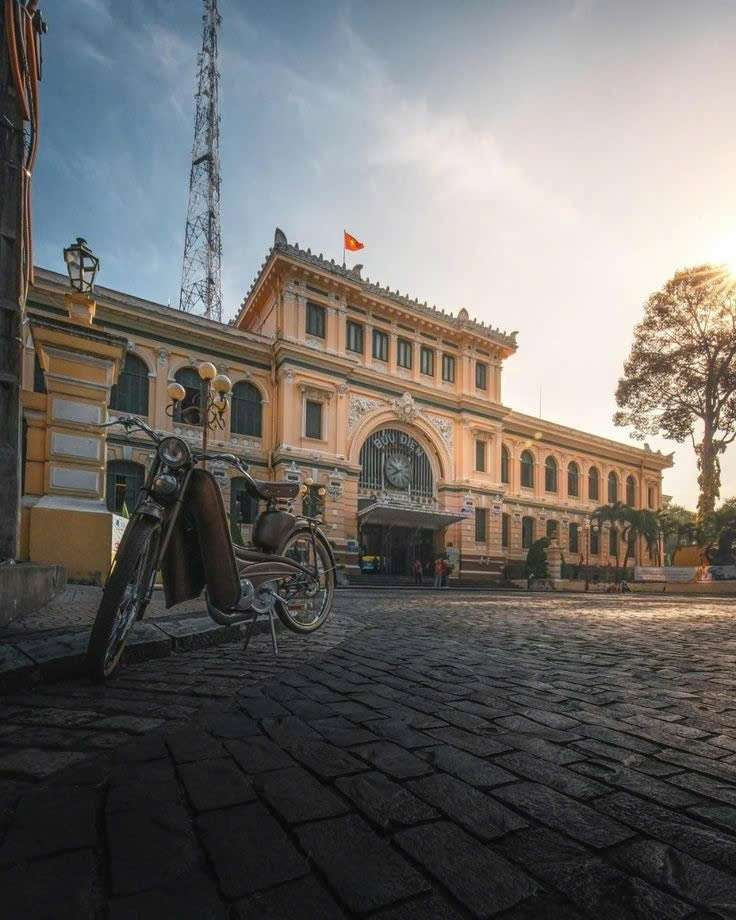
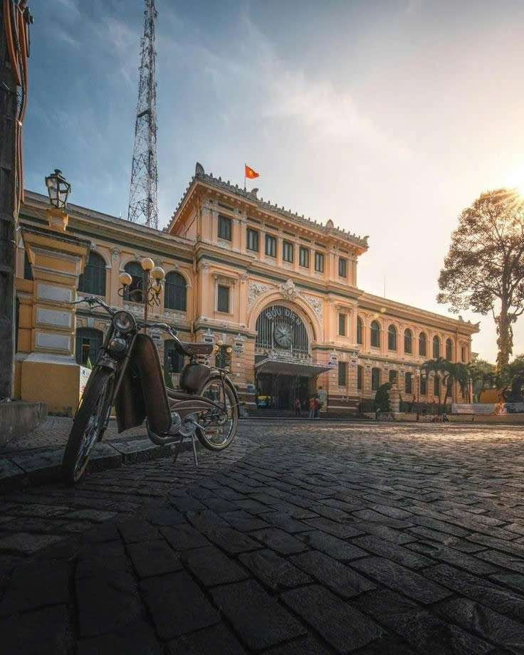
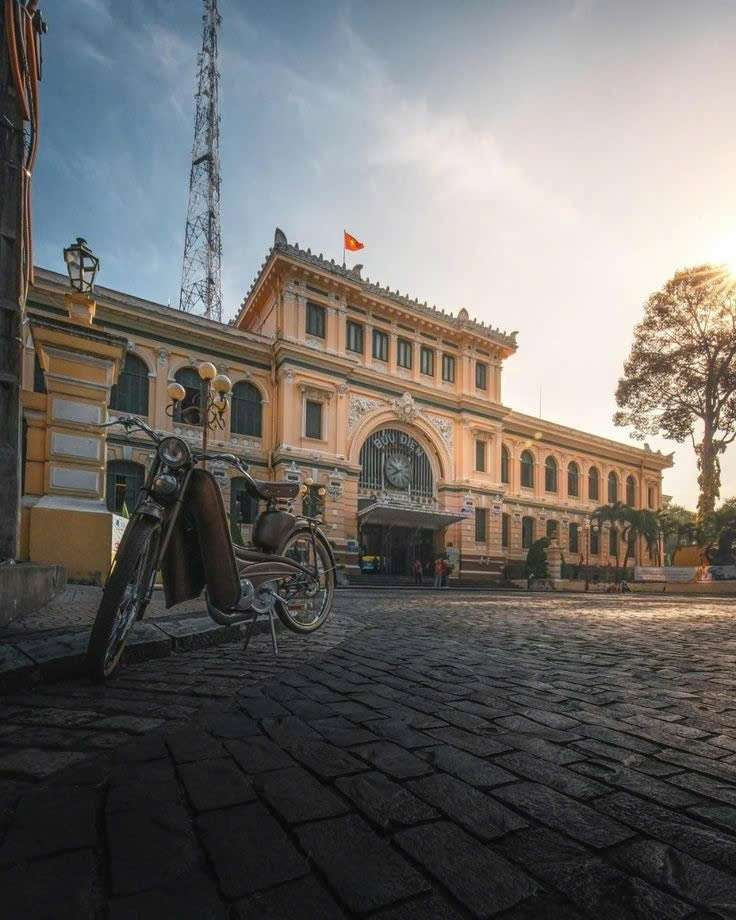
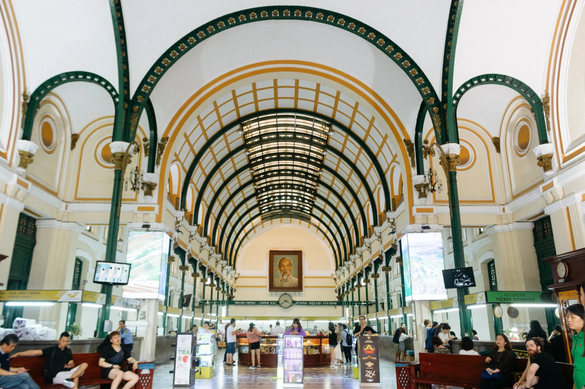

Ngay khi chiếm được Sài Gòn, Pháp đã tạo ngay hệ thống thông tin liên lạc. Ngày 11/11/1860, “Sở dây thép” (tức Bưu điện Sài Gòn ngày nay) chính thức được thành lập. Ngày 13/1/1863, Sở dây thép Sài Gòn khánh thành và phát hành tem con cò đầu tiên. Năm 1864, nhân dân Sài Gòn bắt đầu gửi thư qua hệ thống này.
Được xây dựng bởi kiến trúc sư người Pháp, vì thế nơi đây cũng mang đậm những nét kiến trúc của châu Âu. Điều đầu tiên khiến nhiều du khách ấn tượng là bưu điện có lớp sơn vàng nổi bật. Toàn cảnh của bưu điện kết hợp với những chiếc lá vàng kèm tia nắng chiếu thẳng vào kiến trúc này khiến nơi đây như ngưng đọng thời gian. Chính giữa bưu điện thành phố Hồ Chí Minh là chiếc đồng hồ lớn được thiết kế nhẹ nhàng theo phong c cổ điển nhưng lại rất tinh tế, phía dưới đồng hồ là cột mốc đánh dấu năm khởi công xây dựng và khánh thành của bưu điện, thu hút ánh nhìn của du khách khi tới đây tham quan. Xung quanh bưu điện trung tâm Sài Gòn được trang trí theo từng ô hình chữ nhật, ở đó ghi danh những nhà phát minh ra ngành điện tín và ngành điện. Hơn nữa, các ô còn đắp hình người đội vòng nguyệt quế lấy ý tưởng từ Hy Lạp tượng trưng cho sức mạnh trí thức. Bưu điện có hai bên lối vào là các cột sắt màu xanh lá cây thẳng với nhau cùng hàng ghế gỗ bóng đã có từ khi khán thành đến nay.

Về lịch sử:
Ngay sau khi giành được Gia Định, vào ngày 11 tháng 11 năm 1860, Sở Dây thép Sài Gòn (hay còn gọi là Bưu điện Sài Gòn) được Pháp gấp rút khởi công để thiết lập hệ thống thông tin liên lạc, tọa lạc ngay trung tâm thành phố, , tòa nhà hơn 130 tuổi này là điểm tham quan nổi tiếng ở Thành phố Hồ Chí Minh.
Năm 2014, tòa nhà được sơn sửa với quy mô lớn nhất kể từ sau năm 1975, bao gồm sơn toàn bộ tòa nhà và sửa lại những chỗ bị dột.
